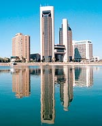
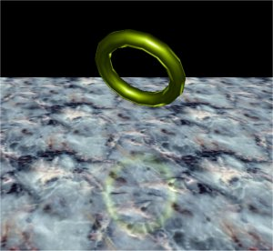

| Izdelava odsevov z uporabo stencil medpomnilnika
Avtor: Wingman
Objavljeno: 10.07.2003, ob 15:38:43.
Uvod
V tem tutorialu vam bom predstavil celoten način izdelave realnočasovno prikazanih odsevov na ravnih površinah, ki ga lahko, kot boste spoznali, brez težav uporabite v lastnih igrah in programih. Kot lahko sklepate iz naslova, bomo za izdelavo odseva uporabili medpomnilnik Stencil, o katerem bomo natančneje govorili kmalu.
Za razumevanje tutoriala morate poznati vsaj nekaj jezika C++ ter osnove OpenGL (risanje osnovnih geometrijskih likov, blending, teksturiranje ipd.). Pomaga tudi osnovno poznavanje medpomnilnikov (bufferjev) z izjemo Stencil medpomnilnika.
Koda, ki jo bomo uporabili ni optimizirana, saj jo bodo tako lahko razumeli tudi manj izkušeni. Brez večjih težav jo lahko npr. spremenite tako, da uporablja display liste (kot jih primer, ki ga lahko prenesete - povezava je na koncu tutoriala).
Prikazovanje odsevov - razlaga
Preden začnemo s samim programiranjem odsevov, vam mora biti jasno samo ozadje oz. teorija. Kako bi naredili refleksivno površino z OpenGL? Kako bi sploh naredili odsev?
Poglejte sliko 1.

slika 1
Vidimo, da je odsev (v tem primeru sicer na vodi) samo obrnjena slika ''pravih'' objektov (v tem primeru stolpnic). Če imamo v 3D prostoru refleksivno površino (recimo marmornata tla) in nad njo nek objekt, bomo torej v to površino preprosto narisali obrnjen objekt. Dokler govorimo o ravnih površinah, je to vsa znanost!
Poglejmo, kako bi z OpenGL naredili odsev:
- 1. Narišemo ''pravi predmet''.
- 2. Narišemo refleksivno površino (npr. tla).
- 3. Narišemo še en predmet, enak prvemu, in ga premaknemo v oz. pod to površino ter obrnemo.
Prvi in tretji korak lahko tudi zamenjamo.
Da pa bomo odsev sploh videli, moramo tla narediti transparentna. To dosežemo z blendingom. Mogoče se sprašujete, kaj se zgodi, če potem rišemo pod tla - po vseh pravilih naj bi se namreč videlo vse pod tlemi. Torej bomo pravila kršili in tal ne bomo narisali na koncu (za vsemi solidnimi objekti), kot naj bi s prosojnimi objekti delali. Tako bomo preprečili, da bi videli objekte pod tlemi, obenem pa bomo še vedno videli odsev.
Ko predmet narišemo v tla, ga obrnemo na glavo s funkcijo glScale*:
|
glScalef (0.0f, -1.0f, 0.0f); // obrnemo predmet (odsev) prek y osi, saj so tla POD njim |
Tu pa se pojavi drugi problem: kako preprečiti, da bo predmet narisan SAMO v tleh, ne pa tudi pod njimi? Tako izrisovanje namreč ne pride v poštev, če hočemo risati tudi pod tla, saj v tem primeru lahko vidimo celoten predmet. Pri reševanju tega problema nastopi medpomnilnik Stencil, ki poskrbi, da se odsev izrisuje samo in le v tleh ter nikjer drugje (po nobeni osi izven področja tal). Preden si ogledamo točno rešitev problema, moramo omenjeni medpomnilnik bolje spoznati.
Medpomnilnik Stencil
Medpomnilnik Stencil (Stencil Buffer) je del Frame medpomnilnika. Preko njega lahko na relativno lahek način dosežemo efekte, kot so odsevi, sence ter striženje (clipping) delov površin (tako lahko npr. narišemo zid in v njem naredimo odprtino za okno).
Splošno povedano nam medpomnilnik Stencil (v nadaljevanju SB) omogoča, da preprečimo risanje na določen del zaslona oz. da vanj (SB) shranimo podatke za posamezen piksel. To v praksi pomeni, da lahko rišemo določene objekte samo tja, kamor želimo in s tem preprečimo, da bi se izrisovali tudi drugje - to je tudi rešitev problema, kako preprečiti, da bi bil odsev narisan pod/za odsevno površino. V našem primeru preko SBja povemo, da naj se odsev izrisuje samo v tleh. Toda kako?
Najprej moramo uporabo SBja sploh omogočiti. Še prej določimo ustrezno število bitov za SB. To naredimo preko strukture PIXELFORMATDESCRIPTOR (ki naj vam bi bila sedaj že znana) med nastavljanjem lastnosti pikslov oz. določanjem formata pikslov.
Z naslednjo kodo (v sistemu Windows) nastavimo 16-bitni SB:
static PIXELFORMATDESCRIPTOR pfd;
pfd.cStencilBits = 16; |
Za razbremenitev SBja obstaja naslednja funkcija:
|
void glClearStencil (GLint s); |
Parameter s določa ''razbremenilno vrednost'' (clear value) za SB in mora imeti vrednost med 0.0 in 1.0. Privzeta vrednost za zgornjo funkcijo je 0.0, kar zapiše v SB vrednosti 0.0.
Ko hočemo to vrednost uporabiti za razbremenitev SBja, kličemo naslednjo funkcijo:
|
void glClear (GLbitfield mask); |
Parameter mask kombinira ustrezne vrednosti za določen medpomnilnik (za kombinacijo se uporabi bitni logični ali) in ga razbremeni glede na predhodne nastavitve (v tem primeru parameter s iz funkcije glClearStencil).
Kot vidite, gre za neke vrste ''reset'' funkcijo oz. funkcijo, kjer postavimo začetne vrednosti.
Spodnja koda kaže razbremenitev barvnega (Color), globinskega (Depth) in Stencil medpomnilnika:
glClear ( GL_COLOR_BUFFER_BIT |
GL_DEPTH_BUFFER_BIT |
GL_STENCIL_BUFFER_BIT); |
Da pa lahko dejansko uporabljamo SB, moramo omogočiti Stencil Test, o katerem malo nižje. Omogočimo ga z naslednjo kodo:
|
glEnable (GL_STENCIL_TEST); |
Za samo delo s SBjem poznamo več funkcij, izmed katerih sta najpomembnejši naslednji:
void glStencilFunc (GLenum func, GLint ref, GLuint mask);
void glStencilOp (GLenum fail, GLenum zfail, GLenum zpass); |
Z glStencilFunc nastavimo Stencil test, ki primerja parameter ref z vrednostjo, shranjeno v pikslu v SBju. Slednja vrednost se spremeni glede na rezultat testa. To je pomembno zato, ker, kot boste videli, določa območje, po katerem lahko rišemo.
S parametrom func nastavimo funkcijo za per-piksel primerjalni test. Možne vrednosti so navedene spodaj:
VREDNOST - OPIS:
GL_NEVER - Test ni nikoli uspešen.
GL_LESS - Test je uspešen, če je ref. vrednost manjša od stencil vrednosti.
GL_LEQUAL - Test je uspešen, če je ref. vrednost manjša ali enaka stencil vrednosti.
GL_GREATER - Test je uspešen, če je ref. vrednost večja od stencil vrednosti.
GL_GEQUAL - Test je uspešen, če je ref. vrednost večja ali enaka stencil vrednosti.
GL_EQUAL - Test je uspešen, če je ref. vrednost enaka stencil vrednosti.
GL_NOTEQUAL - Test je uspešen, če ref. vrednost ni enaka stencil vrednosti.
GL_ALWAYS - Test je vedno uspešen.
Kadar je test uspešen, pride še do globinskega testa. Kar se dogaja zatem, je izven ranga tega tutoriala, vendar vedite, da gre pri vsem skupaj za prirejanje vrednosti, iz katerih v našem primeru določimo območje risanja. Tako ali tako pa lahko nadziramo, kaj naj se zgodi, če je test uspešen ali ne. Vendar se prehitevam, pojdimo po vrsti.
Parameter mask se po končanem testu z bitnim logičnim in kombinira z referenčno vrednostjo in vrednostjo, shranjeno v SBju.
Poglejmo sedaj še funkcijo glStencilOp. Parameter fail določa, kaj naj se zgodi, če Stencil test ni uspešen. zfail določa dogodek, če je Stencil test uspešen, globinski (Depth) test pa ne, zpass pa dogodek, če sta uspešna oba testa. Vrednost za te parametre je lahko ena od naslednjih:
VREDNOST - OPIS:
GL_ZERO - Priredi SB vrednosti 0.
GL_KEEP - Obdrži isto vrednost.
GL_REPLACE - Nastavi SB vrednost na velikost parametra ref (iz glStencilFunc)
GL_INCR - Poveča trenutno SB vrednost.
GL_DECR - Zmanjša trenutno SB vrednost.
GL_INVERT - Invertira SB vrednost.
Če vam je trenutno bolj malo jasno, ne skrbite. Po ogledu primera boste razumeli.
Primer - odsev na marmornatih tleh
Sedaj veste dovolj, da si lahko ogledamo, kako se v OpenGL programirajo Stencil odsevi. Še enkrat naj omenim, da bo koda neoptimizirana. Prav tako tukaj ne bom pisal kode, ki se tutoriala ne tiče.
Torej, narediti želimo refleksivna tla, nad katerimi se vrti torus. Kako bo vse skupaj izgledalo na kocnu, prikazuje slika 2.

slika 2
Začnimo. Najprej nastavimo piksel format:
static PIXELFORMATDESCRIPTOR pfd;
pfd.nVersion = 1;
pfd.nSize = sizeof (PIXELFORMATDESCRIPTOR);
pfd.iPixelType = PFD_TYPE_RGBA;
pfd.iLayerType = PFD_MAIN_PLANE;
pfd.dwFlags = PFD_DRAW_TO_WINDOW |
PFD_SUPPORT_OPENGL |
PFD_DOUBLEBUFFER;
pfd.cColorBits = 32;
pfd.cDepthBits = 16; // 16 bitov za depth buffer
pfd.cStencilBits = 16; // 16 bitov za stencil buffer |
Naslednja struktura bo vsebovala funkciji, ki narišeta torus in tla:
struct str_Draw
{
// nariše torus
void sDrawTorus (GLfloat x, GLfloat y, GLfloat z,
GLfloat y_scale);
// nariše tla
void sDrawFloor (GLfloat x, GLfloat y, GLfloat z);
};
str_Draw Draw; |
Parametri x, y in z določajo pozicijo omenjenih objektov. y_scale bomo uporabili, da bomo lahko odsev obrnili na glavo - uporabili bomo funkcijo glScalef (1.0f, y_scale, 1.0f). Za odsev bo ta vrednost -1.0f, za ''pravilno'' obrnjen torus pa 1.0f.
Definiramo tudi spremenljivko, ki jo bomo uporabili za rotacijo torusa:
Naslednja koda nariše kvadrat, ki ga bomo kasneje skalirali tako, da bomo dobili ustrezno velika tla:
void fncDrawQuad ()
{
glBegin (GL_TRIANGLE_STRIP);
glTexCoord2f (0.0f, 0.0f);
glVertex3f (-1.0f, -1.0f, 1.0f);
glTexCoord2f (3.0f, 0.0f);
glVertex3f (1.0f, -1.0f, 1.0f);
glTexCoord2f (0.0f, 3.0f);
glVertex3f (-1.0f, 1.0f, 1.0f);
glTexCoord2f (3.0f, 3.0f);
glVertex3f (1.0f, 1.0f, 1.0f);
glEnd ();
} |
Poglejmo še funkcijo, ki nariše torus:
void str_Draw::sDrawTorus ( GLfloat x,
GLfloat y,
GLfloat z,
GLfloat y_scale)
{
// vključimo avtomatsko generiranje koordinat teksture
glEnable (GL_TEXTURE_GEN_S);
glEnable (GL_TEXTURE_GEN_T);
glTexGenf (GL_S, GL_TEXTURE_GEN_MODE, GL_SPHERE_MAP);
glTexGenf (GL_T, GL_TEXTURE_GEN_MODE, GL_SPHERE_MAP);
// določimo teksturo torusu; tekstura je sphere map
glBindTexture (GL_TEXTURE_2D, tex1->Tex);
glPushMatrix ();
// določimo pozicijo
glTranslatef (x, y, z);
// določimo, kako je torus obrnjen
glScalef (1.0f, y_scale, 1.0f);
// vrtimo torus
glRotatef (rot, 1.0f, 0.0f, 0.0f);
glRotatef (rot, 1.0f, 1.0f, 0.0f);
glRotatef (rot, 1.0f, 0.0f, 1.0f);
// narišemo torus
auxSolidTorus (1.0f, 5.0f);
glPopMatrix ();
} |
Tako pa izgleda funkcija, ki nariše tla:
void str_Draw::sDrawFloor (GLfloat x, GLfloat y, GLfloat z)
{
// izključimo avtomatsko generiranje koordinat teksture
glDisable (GL_TEXTURE_GEN_S);
glDisable (GL_TEXTURE_GEN_T);
// določimo teksturo
glBindTexture (GL_TEXTURE_2D, tex2->Tex);
glPushMatrix ();
glTranslatef (x, y, z);
// obrnemo tla tako, da potekajo po x in z osi
glRotatef (90.0f, -1.0f, 0.0f, 0.0f);
// določimo tlem ustrezne dimenzije
glScalef (30.0f, 30.0f, 1.0f);
fncDrawQuad ();
glPopMatrix ();
} |
Sedaj je na vrsti najpomembnejši del - samo izrisovanje vsega. Po vrsti si oglejmo celotno funkcijo:
// s to funkcijo bomo izrisovali celotno sceno
void fncRender ()
{
// razbremenimo medpomnilnike
glClear ( GL_COLOR_BUFFER_BIT |
GL_DEPTH_BUFFER_BIT |
GL_STENCIL_BUFFER_BIT);
glLoadIdentity ();
// postavimo kamero na ustrezno mesto
gluLookAt ( 0.0f, 15.0f, 15.0f,
0.0f, 0.0f, -20.0f,
0.0f, 1.0f, 0.0f); |
V teh prvih vrsticah torej nič posebnega. Gremo naprej:
glDisable (GL_DEPTH_TEST);
glColorMask (GL_FALSE, GL_FALSE, GL_FALSE, GL_FALSE);
glEnable (GL_STENCIL_TEST); // dostopamo do SB |
Prvi dve vrstici preprečita, da bi povzročali spremembe na zaslonu (mimogrede, če funkcije glColorMask ne poznate: http://msdn.microsoft.com/library/default.asp?url=/library/en-us/opengl/glfunc01_1fsb.asp). Takoj zatem omogočimo Stencil test, tako da imamo dostop do SB. Sledijo naslednje vrstice:
glStencilFunc (GL_ALWAYS, 1, 1);
glStencilOp (GL_REPLACE, GL_REPLACE, GL_REPLACE);
Draw.sDrawFloor (0.0f, -7.0f, -40.0f); |
GL_ALWAYS pove, da bo test vedno uspel. Referenčno vrednost nastavimo na 1, prav tako pa v naslednji vrstici povemo, da naj se SB vrednost vedno nadomesti z referenčno vrednostjo, ki se z bitnim logičnim in kombinira z mask parametrom. Ker je tudi mask=1, se piksli v SBju nadomestijo z 1.
Nato v SB narišemo tla - samo da jih ne vidimo. Razlog je v tem, da smo onemogočili risanje na zaslon (z glColorMask). Vendar smo prejšnji dve funkciji nastavili tako, da bo na območju, kjer ''narišemo'' tla, vrednost 1! Po domače povedano: s to vrstico povemo, da naj prejšnje nastavitve veljajo za območje tal.
Gremo dalje:
glEnable (GL_DEPTH_TEST);
glColorMask (GL_TRUE, GL_TRUE, GL_TRUE, GL_TRUE);
glStencilFunc (GL_EQUAL, 1, 1);
glStencilOp (GL_KEEP, GL_KEEP, GL_KEEP); |
Najprej spet omogočimo risanje na zaslon in posodabljanje, torej bomo od sedaj naprej videli, kar bomo narisali.
Z glStencilFunc nato povemo, da bo test uspel samo, kadar je vrednost v SB enaka ref=1. Ker smo prej nastavili vrednost na območju tal na 1, to pomeni, da bomo lahko v SB risali samo tam, kjer so tla oz. kjer je vrednost 1.
Z glStencilOp še nastavimo, da Stencil vrednosti ne bomo spreminjali. Če te funkcije na bi klicali s parametrom GL_KEEP, bi se SB vrednosti še vedno nadomeščale, saj bi se uporabil prejšnji parameter, torej GL_REPLACE. Posledično bi lahko v SB risali tudi tam, kjer tega nočemo.
Nato v tla narišemo odsev torusa:
glCullFace (GL_FRONT);
Draw.sDrawTorus (0.0f, -14.5f, -35.0f, -1.0f); // odsev
glCullFace (GL_BACK); |
Tisto, na kar bodite pozorni, je funkcija glCullFace. Če ste pri inicializaciji (ali kjerkoli že) klicali funkcijo glEnable (GL_CULL_FACE) in nato glCullFace s parametrom GL_BACK, jo morate pri risanju odseva zaradi inverznega risanja klicati s parametrom GL_FRONT. Če je bila funkcija prej nastavljena na parameter GL_FRONT, morate pri odsevu klicati GL_BACK. Če glEnable (GL_CULL_FACE) niste klicali, lahko odsev narišete brez klicanja glCullFace.
V našem primeru predpostavljamo, da smo klicali in glEnable (GL_CULL_FACE) in glCullFace (GL_BACK). Za tem, ko smo narisali odsev torusa, funkciji spet vrnemo prejšnje stanje.
Naslednji korak je ''pravo'' risanje tal, v katerih bomo videli odsev:
// SBja ne bomo več spreminjali oz. ne bomo več risali vanj
glDisable (GL_STENCIL_TEST);
glEnable (GL_BLEND);
glBlendFunc (GL_ONE, GL_ONE_MINUS_SRC_ALPHA);
glColor4f (1.0f, 1.0f, 1.0f, 0.8f);
Draw.sDrawFloor (0.0f, -7.0f, -40.0f);
glDisable (GL_BLEND); |
Najprej onemogočimo Stencil test in s tem povemo, da SBja ne bomo več uporabljali oz. da vanj ne bomo risali. Tako lahko ponovno rišemo po celi sceni, ne samo v tla - želimo namreč, da ima omejeno področje izrisovanja samo odsev, ne pa tudi vse ostalo.
Nato vklopimo blending in ga ustrezno nastavimo. Tlem določimo delno prosojnost, tako da bomo odsev sploh videli - manjša kot je alpha vrednost, bolje vidimo odsev (površina je refleksivnejša); večja kot je alpha, manj se odsev vidi. Za dodatne efekte lahko transparentnost uporabite tudi na odsevu.
Preizkušajte različne parametre blending funkcije, da vidite razliko.
Na koncu blending izključimo, saj bomo spet risali solidne (neprosojne) objekte. V bistvu bi moral uporabiti ednino, saj nam je za izris ostal samo še en objekt:
Draw.sDrawTorus (0.0f, 3.0f, -35.0f, 1.0f);
// vrtimo torus
rot += 0.5f;
if (rot >= 360.0f) { rot = 0.0f; }
} // konec fncRender () |
Tu narišemo ''pravi'' torus.
S tem je tutorial zaključen. SB se sicer za izrisovanje senc in odsevov uporablja vedno manj, saj ga izpodrivajo senčilniki (shaderji). Vendar ga je vseeno dobro poznati, saj z le nekaj funkcijami omogoča, da naredimo zelo veliko zelo hitro.
Za konec si lahko iz naslednjega naslova snamete še izvorno kodo: [stencil_odsevi_src.rar (95KB)]
Če imate kakšno vprašanje, komentar, pripombo... mi pišite na Dusan.Vucko@…, ali pa me kontaktirajte preko foruma.
Dušan ''Wingman'' Vučko
|